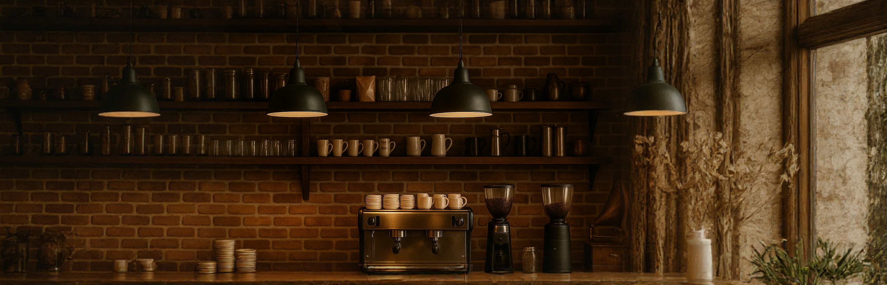

Welkom bij Caffè Luna
dagversekoffie, rustigehoekjes een tikje magie - dat is waar wij voor staan.
In het hart van de stad vind je onze gezellige koffiebar waar de geur van versgemalen bonen je meteen verwelkomt. Onze barista's bereiden elke kop met zorg, aandacht en passie voor detail.

Over ons
Caffè Luna is ontstaan uit een liefde voor ambachtelijke koffie en lokale gezelligheid. We werken uitsluitend met bonen die rechtstreeks bij duurzame plantages worden ingekocht. Ons doel is eenvoudig: een warme plek creëren waar iedereen zich thuis voelt.
- 🌱Duurzame koffiebonen van kleine boeren
- 🍪Huisgemaakte taarten en desserts
- 📕Een leeshoek en rustige werkplekken
- 🎵Live jazz op vrijdagavond
Of je nu even wil ontsnappen aan de drukte, een boek wil lezen of een praatje wil slaan met vrienden, bij Caffè Luna vind je altijd de juiste sfeer.
Onze filosofie
“Goede koffie is geen luxe, maar een moment van rust.”
We geloven dat elke kop koffie een verhaal vertelt. Daarom selecteren we onze bonen zorgvuldig, branden we ze met aandacht en schenken we ze met een glimlach. Deze website is opgebouwd in eenvoudige HTML, net als onze koffie — puur en eerlijk.
Menu
Onze kaart wisselt per seizoen. Hieronder vind je enkele vaste toppers en onze dagselectie.
- Espresso
- Cappuccino
- Flat White
- Cheesecake
- Tiramisu
- Kies je favoriete drank
- Neem plaats aan de bar
- Geniet van het moment
- Single origin
- Bonen van één herkomst met unieke smaakprofielen
- blend
- een zorgvuldig uitgebalanceerde melanve
- decaf
- zonder cafeine, maar met evenveel smaak
| item | maat | prijs |
|---|---|---|
| espresso | klein | 220 |
| Cappuccino | middel | 310 |
| Flat White | groot | 360 |
| Cheesecake | stuk | 400 |
| opmerking | - | prijzen inclusief btw |
bezoekers over ons
We krijgen vaak warme reacties van klanten die onze koffie en sfeer waarderen:
“Een verborgen parel! Lekkere cappuccino en vriendelijk personeel.” - Marie “Mijn favoriete plek om te werken. Rustig, met heerlijke cheesecake.” - Jonas “De barista kende mijn bestelling na drie bezoeken. Zalig!” - Fatima